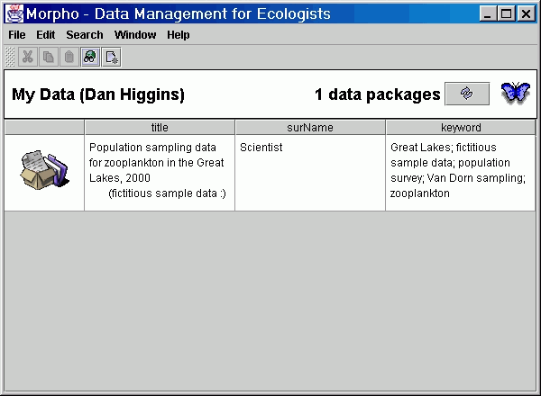
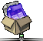
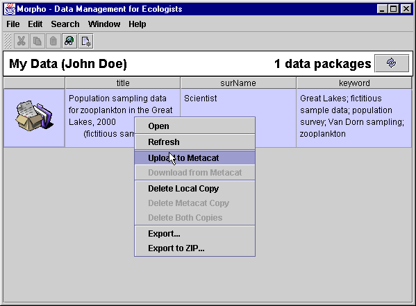
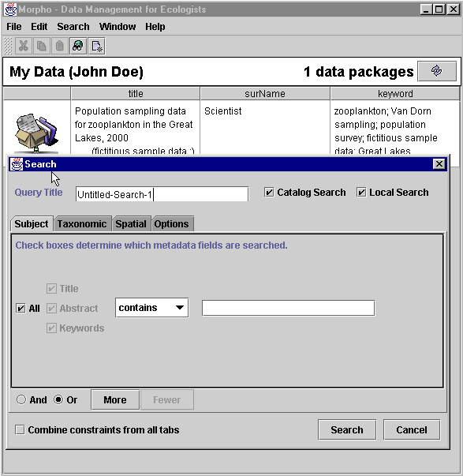
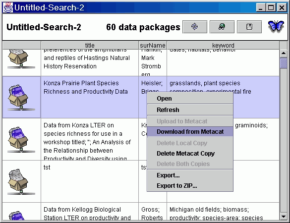

The first time you login the main morpho screen looks like the image below.

The main morpho screen is divided up into two functional sections:
- Menu (File, Edit, Search, Window, Help) and a toolbar containing icons.
 The search icon begins the data package search process. The search icon begins the data package search process.
 The new data pacakge icon begins the process required to create your own data package. The new data pacakge icon begins the process required to create your own data package.
- Data package - "My Data" display area. There is a fictitious data package created to help the new user. As new packages are created and downloaded they will be shownn here.
Data Packages
Morpho uses the term "Data Packages" to describe a set of metadata and /or data and is represented by a row in the "My Data" area. This data package is either stored locally and /or on a metacat server. The datapackage icons and their definitions are illustrated in the table below.
|
Data Package Icon
|
Package Definition
|
|
|
Package consists of metadata and is stored locally on your PC. Box represents a data package and the folder represents a directory on your PC.
|
|
|
Package consists of metadata and data (blue sheet). Stored locally.
|
|
|
Package consists of metadata and is only stored on a metacat (the networked graphic). This package icon appears when a search query returns a successful result from a metacat server.
|
|

|
Package consists of metadata and data. Stored only on a metacat. Displayed from a sucessful search.
|
|
|
Package contains metadata and is located both locally and on a metacat.
|
|
|
Package contains metadata and data and is located both locally and on metacat.
|
Data packages, while created locally, can be uploaded to a metacat server to become a shared metacat data package. Data packages are uploaded by right clicking a data package row.

! Notice the other options:
- Open the package to view the metadata (and data if present).
- Refesh the screen.
- Delete the local copy.
- Export the metadata/data to a local directory.
- Export to a ZIP file.
Search Interface
Click the search icon or use the search menu to begin the data package search process.


The search interface allows you to name the query "Query Title" and save it for later use. The "catalog" and "local" checkboxes imply your search will occur both locally and on a metacat server. The tabs (Subject, Taxonomic, Spatial, Options) provide more detailed searh crieria. After entering your search criteria your results are displayed below.

Similarly to uploading a data package, you can download a data package, to your local PC from metacat by right-clicking and selecting "Download from Metacat". Notice you also have the option to delete data packages. You are only allowed to delete files when you created them or have special permissions. See more on permissions
|

 Previous
Create a Data Package
Previous
Create a Data Package